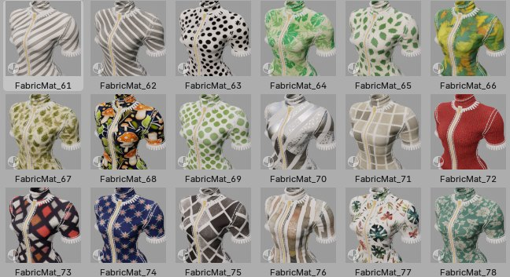

Materials Library#

Since release of Garment Tool 2.1, garments library can now be used to load cloth materials presets - above 80 materials are included in the library (free for all Garment Tool users).
First we use Blender Asset Browser to add material to the mesh, then we use Garment Tool Library to replace active material on active mesh.
Library location#
User Preferences > add-ons > Garment Tool > Library tab.
To get materials library go to Gumroad, and navigate to your Garment Tool purchase page. In the GTool downloads section you will find zip file with the sewing patterns and material presets.
Loading materials#
The Materials can be added to your mesh in two ways:
- Click on 'Append' button from Garment Tool Library panel - this will replace active material on active object - all other instances of this material will be replaced too!
- By dragging and dropping material from Blender's built-in Asset Browser - this will add new material to the mesh (but all other instances of this material won't be affected).
Usage#
The Garment Tool material setup is quite simple - one diffuse texture is used for color roughness and bump (usually bump is done with Detail Texture though).
Curvature map attribute is used, in Overlay mode, on top of diffuse to add some depth to the material. Curvature Generator can be loaded using:
- 'Garment Tool' tab > 'Finalize/Stitches' panel > Add Curvature Mod button.
Without Curvature Generator modifier the imported denim material looks flat
Depth Texture is used for bump effect. It is also overlaid on top of Curvature, to break curvature smooth transition look
Detail Texture - tillable texture overlaid on top of diffuse texture, to add tiny fabric detail to the material look. In Garment Tool it can be used to replace depth texture Bump map effect. Default detail texture is already included inside 'FabricShader' node, but it can be overridden with 'Use Custom Detail Texture' checkbox
License#
License - CAL-NA-NRB. Basically you can do everything with the assets:
- commercial use of base asset and modifications,
- no requirement to credit the author,
- reselling of modifications,
- modifications are allowed, and can be shared
The only thing you can't do is to resell the assets as they are. Reselling base items is not allowed
Except the Denim texture - I grabbed it form internet with CC0 license, so it is free to use for any purpose.